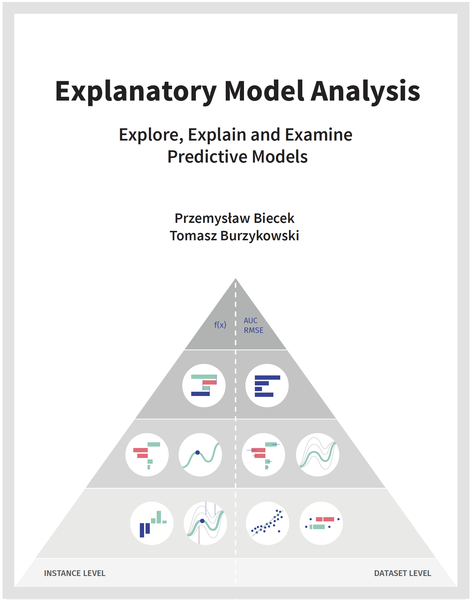

Explanatory Model Analysis
Explore, Explain, and Examine Predictive Models. With examples in R and Python.
2020-12-11
Preface

@Book{,
author = {Przemyslaw Biecek and Tomasz Burzykowski},
title = {{Explanatory Model Analysis}},
publisher = {Chapman and Hall/CRC, New York},
year = {2021},
isbn = {9780367135591},
url = {https://pbiecek.github.io/ema/},
}